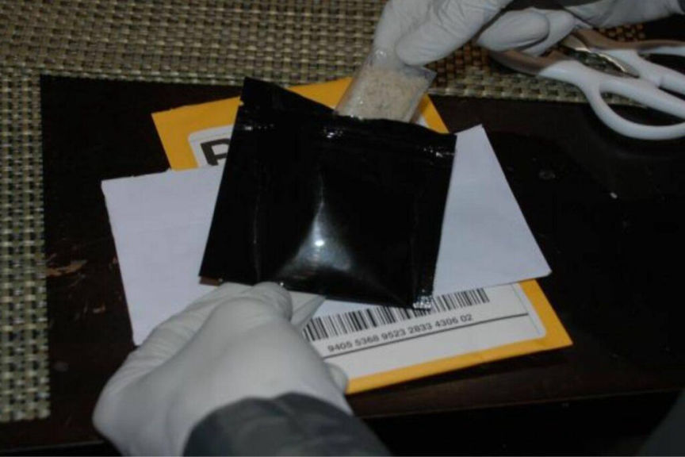
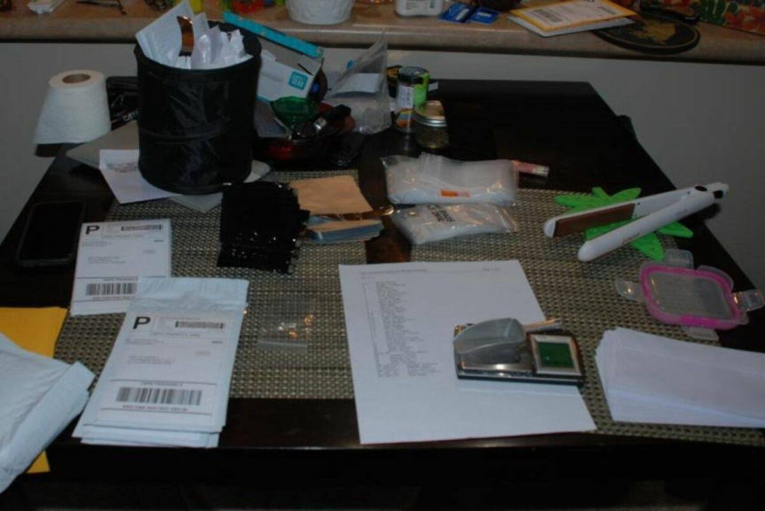
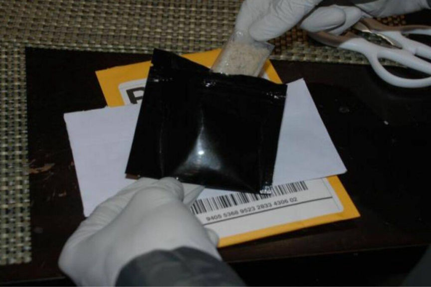
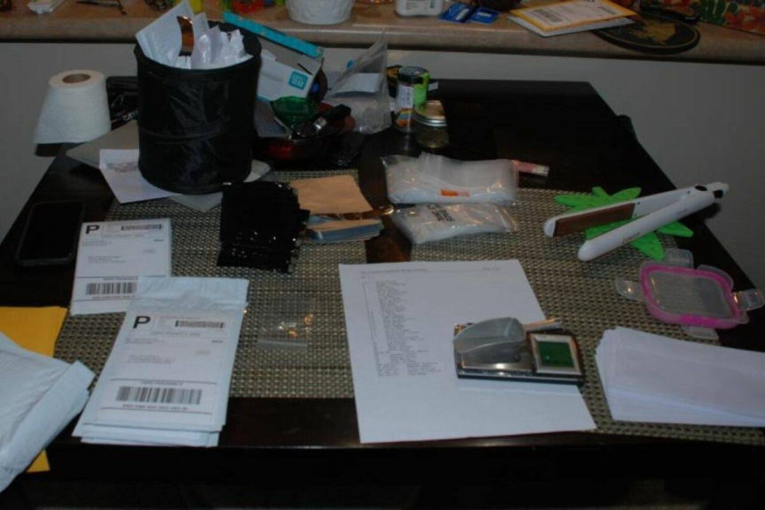

Washington Man Sentenced for Running a Drugs Vendor Account
~2 min read | Published on 2023-07-12, tagged Darkweb-Vendor, Sentenced using 328 words.
A Washington man was sentenced to over two years in prison for overseeing the operations of a dark web drug trafficking operation.

According to a press release, 39-year-old Jonathan Williams conspired in the distribution of LSD and MDMA through an undisclosed vendor profile on the dark web. Williams served as the operator of the vendor account, while his two accomplices packaged and mailed the drugs to their buyers.
Williams and his co-defendants, 51-year-old Linus Lee and 70-year-old Joyce Oldrich were indicted in July 2022, following an investigation by the FBI and U.S. Postal Inspection Service. During the investigation, the investigators made multiple undercover purchases from the vendor.
The undercover purchases led to the identification of Oldrich as the mailer of the drug packages. Surveillance on Oldrich led the investigators to Lee.
A search at Lee's residence resulted in the seizure of more than $7,600 in cash, over 5,000 LSD tablets, and more than four kilos of MDMA. Lee had already packaged some of the drugs in preparation for mailing to their buyers.

Forensic analysis of the duo's phones led the investigators to Williams. Lee and Williams had allegedly been discussing the pricing of the drugs they sold on the dark web. The investigators searched Williams' home but they did not find any drugs. They however, found $21,000 in cash that they reportedly established came from the drug trafficking operation.
In addition to two and a half years in prison, U.S. District Judge James L. Robart sentenced Williams to three years of supervised release on July 11, 2023.
Lee received a similar sentence on April 18, 2023, while Oldrich was sentenced to time served and three years of supervised release.

A drug package seized by the agents
According to a press release, 39-year-old Jonathan Williams conspired in the distribution of LSD and MDMA through an undisclosed vendor profile on the dark web. Williams served as the operator of the vendor account, while his two accomplices packaged and mailed the drugs to their buyers.
Williams and his co-defendants, 51-year-old Linus Lee and 70-year-old Joyce Oldrich were indicted in July 2022, following an investigation by the FBI and U.S. Postal Inspection Service. During the investigation, the investigators made multiple undercover purchases from the vendor.
The undercover purchases led to the identification of Oldrich as the mailer of the drug packages. Surveillance on Oldrich led the investigators to Lee.
A search at Lee's residence resulted in the seizure of more than $7,600 in cash, over 5,000 LSD tablets, and more than four kilos of MDMA. Lee had already packaged some of the drugs in preparation for mailing to their buyers.

Drug shipping material found in Lee's home
Forensic analysis of the duo's phones led the investigators to Williams. Lee and Williams had allegedly been discussing the pricing of the drugs they sold on the dark web. The investigators searched Williams' home but they did not find any drugs. They however, found $21,000 in cash that they reportedly established came from the drug trafficking operation.
Quote:Acting U.S. Attorney Tessa M. Gorman
Mr. Williams used his computer skills to make dangerous drugs available to anyone with a computer. He may have physically kept his hands off the drugs but, using his computer keyboard, he enriched himself while putting others at risk.
In addition to two and a half years in prison, U.S. District Judge James L. Robart sentenced Williams to three years of supervised release on July 11, 2023.
Lee received a similar sentence on April 18, 2023, while Oldrich was sentenced to time served and three years of supervised release.